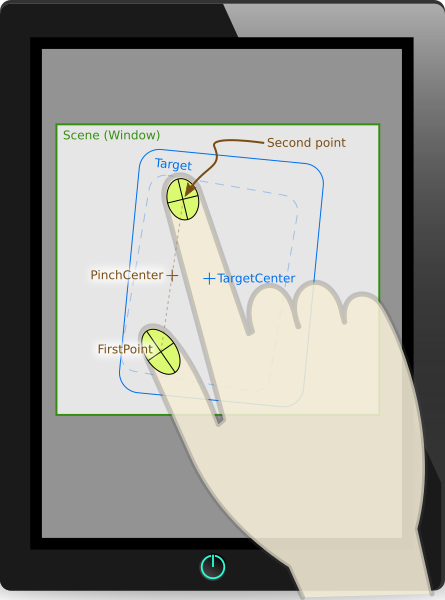

PinchHandler QML Type
Handler for pinch gestures. More...
| Import Statement: | import QtQuick |
| Inherits: |
Properties
- acceptedDevices : flags
- acceptedModifiers : flags
- acceptedPointerTypes : flags
- active : bool
- activeRotation : real
- activeScale : real
- activeTranslation : QPointF
- centroid : QtQuick::handlerPoint
- cursorShape : Qt::CursorShape
- dragThreshold : int
- enabled : bool
- grabPermissions : flags
- margin : real
- parent : Item
- persistentRotation : real
- persistentScale : real
- persistentTranslation : QPointF
- rotationAxis
- rotationAxis.activeValue : real
- rotationAxis.enabled : bool
- rotationAxis.maximum : real
- rotationAxis.minimum : real
- scaleAxis
- scaleAxis.activeValue : real
- scaleAxis.enabled : bool
- scaleAxis.maximum : real
- scaleAxis.minimum : real
- target : Item
- xAxis
- xAxis.activeValue : real
- xAxis.enabled : bool
- xAxis.maximum : real
- xAxis.minimum : real
- yAxis
- yAxis.activeValue : real
- yAxis.enabled : bool
- yAxis.maximum : real
- yAxis.minimum : real
Signals
- canceled(eventPoint point)
- grabChanged(PointerDevice::GrabTransition transition, eventPoint point)
- rotationChanged(qreal delta)
- scaleChanged(qreal delta)
- translationChanged(QVector2D delta)
Detailed Description
PinchHandler is a handler that interprets a multi-finger gesture to interactively rotate, zoom, and drag an Item. Like other Input Handlers, by default it is fully functional, and manipulates its target, which is the Item within which it is declared.
import QtQuick Rectangle { width: 400 height: 300 color: "lightsteelblue" PinchHandler { } }
It has properties to restrict the range of dragging, rotation, and zoom.
If it is declared within one Item but is assigned a different target, it handles events within the bounds of the outer Item but manipulates the target Item instead:
import QtQuick Item { width: 640 height: 480 Rectangle { id: map color: "aqua" width: 400 height: 300 } PinchHandler { target: map } }
A third way to use it is to set target to null and react to property changes in some other way:
import QtQuick Window { width: 320; height: 240 visible: true title: handler.persistentRotation.toFixed(1) + "° " + handler.persistentTranslation.x.toFixed(1) + ", " + handler.persistentTranslation.y.toFixed(1) + " " + (handler.persistentScale * 100).toFixed(1) + "%" PinchHandler { id: handler target: null persistentScale: 0.25 onTranslationChanged: (delta) => { image.x -= delta.x image.y -= delta.y } } Image { id: image source: "images/album-cover.jpg" scale: handler.persistentScale x: -600; y: -450 } }

Note: The pinch begins when the number of fingers pressed is between minimumPointCount and maximumPointCount, inclusive. Until then, PinchHandler tracks the positions of any pressed fingers, but if it's a disallowed number, it does not scale or rotate its target, and the active property remains false.
See also PinchArea, QPointerEvent::pointCount(), QNativeGestureEvent::fingerCount(), and Qt Quick Examples - Pointer Handlers.
Property Documentation
acceptedDevices : flags |
The types of pointing devices that can activate this Pointer Handler.
By default, this property is set to PointerDevice.AllDevices. If you set it to an OR combination of device types, it will ignore events from non-matching devices.
For example, a control could be made to respond to mouse and stylus clicks in one way, and touchscreen taps in another way, with two handlers:
Item { TapHandler { acceptedDevices: PointerDevice.Mouse | PointerDevice.TouchPad | PointerDevice.Stylus onTapped: console.log("clicked") } TapHandler { acceptedDevices: PointerDevice.TouchScreen onTapped: console.log("tapped") } }
Note: Not all platforms are yet able to distinguish mouse and touchpad; and on those that do, you often want to make mouse and touchpad behavior the same.
acceptedModifiers : flags |
If this property is set, it will require the given keyboard modifiers to be pressed in order to react to pointer events, and otherwise ignore them.
If this property is set to Qt.KeyboardModifierMask (the default value), then the PointerHandler ignores the modifier keys.
For example, an Item could have two handlers of the same type, one of which is enabled only if the required keyboard modifiers are pressed:
Item { TapHandler { acceptedModifiers: Qt.ControlModifier onTapped: console.log("control-tapped") } TapHandler { acceptedModifiers: Qt.NoModifier onTapped: console.log("tapped") } }
If you set acceptedModifiers to an OR combination of modifier keys, it means all of those modifiers must be pressed to activate the handler:
Item { TapHandler { acceptedModifiers: Qt.ControlModifier | Qt.AltModifier | Qt.ShiftModifier onTapped: console.log("control-alt-shift-tapped") } }
The available modifiers are as follows:
| Constant | Description |
|---|---|
NoModifier | No modifier key is allowed. |
ShiftModifier | A Shift key on the keyboard must be pressed. |
ControlModifier | A Ctrl key on the keyboard must be pressed. |
AltModifier | An Alt key on the keyboard must be pressed. |
MetaModifier | A Meta key on the keyboard must be pressed. |
KeypadModifier | A keypad button must be pressed. |
GroupSwitchModifier | X11 only (unless activated on Windows by a command line argument). A Mode_switch key on the keyboard must be pressed. |
KeyboardModifierMask | The handler does not care which modifiers are pressed. |
If you need even more complex behavior than can be achieved with combinations of multiple handlers with multiple modifier flags, you can check the modifiers in JavaScript code:
Item { TapHandler { onTapped: switch (point.modifiers) { case Qt.ControlModifier | Qt.AltModifier: console.log("CTRL+ALT"); break; case Qt.ControlModifier | Qt.AltModifier | Qt.MetaModifier: console.log("CTRL+META+ALT"); break; default: console.log("other modifiers", point.modifiers); break; } } }
See also Qt::KeyboardModifier.
acceptedPointerTypes : flags |
The types of pointing instruments (finger, stylus, eraser, etc.) that can activate this Pointer Handler.
By default, this property is set to PointerDevice.AllPointerTypes. If you set it to an OR combination of device types, it will ignore events from non-matching devices.
For example, a control could be made to respond to mouse, touch, and stylus clicks in some way, but delete itself if tapped with an eraser tool on a graphics tablet, with two handlers:
Rectangle { id: rect TapHandler { acceptedPointerTypes: PointerDevice.Generic | PointerDevice.Finger | PointerDevice.Pen onTapped: console.log("clicked") } TapHandler { acceptedPointerTypes: PointerDevice.Eraser onTapped: rect.destroy() } }
active : bool |
This property is true when all the constraints (epecially minimumPointCount and maximumPointCount) are satisfied and the target, if any, is being manipulated.
activeRotation : real |
activeScale : real |
The scale factor while the pinch gesture is being performed. It is 1.0 when the gesture begins, increases as the touchpoints are spread apart, and decreases as the touchpoints are brought together. If target is not null, its scale will be automatically multiplied by this value. Otherwise, bindings can be used to do arbitrary things with this value.
activeTranslation : QPointF |
The translation of the cluster of points while the pinch gesture is being performed. It is 0, 0 when the gesture begins, and increases as the eventPoint(s) are dragged downward and to the right. After the gesture ends, it stays the same; and when the next pinch gesture begins, it is reset to 0, 0 again.
Note: On some touchpads, such as on a macOS trackpad, native gestures do not generate any translation values, and this property stays at (0, 0).
centroid : QtQuick::handlerPoint |
A point exactly in the middle of the currently-pressed touch points. The target will be rotated around this point.
cursorShape : Qt::CursorShape |
This property holds the cursor shape that will appear whenever the mouse is hovering over the parent item while active is true.
The available cursor shapes are:
- Qt.ArrowCursor
- Qt.UpArrowCursor
- Qt.CrossCursor
- Qt.WaitCursor
- Qt.IBeamCursor
- Qt.SizeVerCursor
- Qt.SizeHorCursor
- Qt.SizeBDiagCursor
- Qt.SizeFDiagCursor
- Qt.SizeAllCursor
- Qt.BlankCursor
- Qt.SplitVCursor
- Qt.SplitHCursor
- Qt.PointingHandCursor
- Qt.ForbiddenCursor
- Qt.WhatsThisCursor
- Qt.BusyCursor
- Qt.OpenHandCursor
- Qt.ClosedHandCursor
- Qt.DragCopyCursor
- Qt.DragMoveCursor
- Qt.DragLinkCursor
The default value is not set, which allows the cursor of parent item to appear. This property can be reset to the same initial condition by setting it to undefined.
Note: When this property has not been set, or has been set to undefined, if you read the value it will return Qt.ArrowCursor.
See also Qt::CursorShape, QQuickItem::cursor(), and HoverHandler::cursorShape.
dragThreshold : int |
The distance in pixels that the user must drag an eventPoint in order to have it treated as a drag gesture.
The default value depends on the platform and screen resolution. It can be reset back to the default value by setting it to undefined. The behavior when a drag gesture begins varies in different handlers.
enabled : bool |
If a PointerHandler is disabled, it will reject all events and no signals will be emitted.
grabPermissions : flags |
This property specifies the permissions when this handler's logic decides to take over the exclusive grab, or when it is asked to approve grab takeover or cancellation by another handler.
| Constant | Description |
|---|---|
PointerHandler.TakeOverForbidden | This handler neither takes from nor gives grab permission to any type of Item or Handler. |
PointerHandler.CanTakeOverFromHandlersOfSameType | This handler can take the exclusive grab from another handler of the same class. |
PointerHandler.CanTakeOverFromHandlersOfDifferentType | This handler can take the exclusive grab from any kind of handler. |
PointerHandler.CanTakeOverFromItems | This handler can take the exclusive grab from any type of Item. |
PointerHandler.CanTakeOverFromAnything | This handler can take the exclusive grab from any type of Item or Handler. |
PointerHandler.ApprovesTakeOverByHandlersOfSameType | This handler gives permission for another handler of the same class to take the grab. |
PointerHandler.ApprovesTakeOverByHandlersOfDifferentType | This handler gives permission for any kind of handler to take the grab. |
PointerHandler.ApprovesTakeOverByItems | This handler gives permission for any kind of Item to take the grab. |
PointerHandler.ApprovesCancellation | This handler will allow its grab to be set to null. |
PointerHandler.ApprovesTakeOverByAnything | This handler gives permission for any type of Item or Handler to take the grab. |
The default is PointerHandler.CanTakeOverFromItems | PointerHandler.CanTakeOverFromHandlersOfDifferentType | PointerHandler.ApprovesTakeOverByAnything which allows most takeover scenarios but avoids e.g. two PinchHandlers fighting over the same touchpoints.
margin : real |
The margin beyond the bounds of the parent item within which an eventPoint can activate this handler. For example, on a PinchHandler where the target is also the parent, it's useful to set this to a distance at least half the width of a typical user's finger, so that if the parent has been scaled down to a very small size, the pinch gesture is still possible. Or, if a TapHandler-based button is placed near the screen edge, it can be used to comply with Fitts's Law: react to mouse clicks at the screen edge even though the button is visually spaced away from the edge by a few pixels.
The default value is 0.

parent : Item |
The Item which is the scope of the handler; the Item in which it was declared. The handler will handle events on behalf of this Item, which means a pointer event is relevant if at least one of its eventPoints occurs within the Item's interior. Initially target() is the same, but it can be reassigned.
See also target and QObject::parent().
persistentRotation : real |
The rotation to be applied to the target if it is not null. Otherwise, bindings can be used to do arbitrary things with this value. While the pinch gesture is being performed, activeRotation is continuously added; after the gesture ends, it stays the same; and when the next pinch gesture begins, it begins to be modified by activeRotation again.
It's possible to set this property, as a way of synchronizing the basis rotation with a rotation that was set in some other way, for example by another handler. If you set this property directly, activeRotation does not change, and rotationChanged(0) is emitted.
persistentScale : real |
The scale factor that will automatically be set on the target if it is not null. Otherwise, bindings can be used to do arbitrary things with this value. While the pinch gesture is being performed, it is continuously multiplied by activeScale; after the gesture ends, it stays the same; and when the next pinch gesture begins, it begins to be multiplied by activeScale again.
It's possible to set this property, as a way of synchronizing the basis scale with a scale that was set in some other way, for example by another handler. If you set this property directly, activeScale does not change, and scaleChanged(1) is emitted.
persistentTranslation : QPointF |
The translation to be applied to the target if it is not null. Otherwise, bindings can be used to do arbitrary things with this value. While the pinch gesture is being performed, activeTranslation is continuously added to it; after the gesture ends, it stays the same.
It's possible to set this property, as a way of synchronizing the basis translation with a translation that was set in some other way, for example by another handler. If you set this property directly, activeTranslation does not change, and translationChanged({0, 0}) is emitted.
Note: On some touchpads, such as on a macOS trackpad, native gestures do not generate any translation values, and this property stays at (0, 0).
rotationAxis controls the constraints for setting the rotation of the target item according to the rotation of the group of touchpoints.
minimum is the minimum acceptable rotation. maximum is the maximum acceptable rotation. If enabled is true, rotation is allowed. activeValue is the same as QtQuick::PinchHandler::activeRotation.
The activeValueChanged signal is emitted when activeValue changes, to provide the increment by which it changed. This is intended for incrementally adjusting one property via multiple handlers.
import QtQuick Rectangle { width: 100; height: 100 color: "lightsteelblue"; antialiasing: true PinchHandler { id: handler target: null xAxis.onActiveValueChanged: (delta) => parent.radius -= delta yAxis.onActiveValueChanged: (delta) => parent.border.width += delta rotationAxis.onActiveValueChanged: (delta) => parent.rotation += delta // add scaleAxis.onActiveValueChanged: (delta) => parent.scale *= delta // multiply } WheelHandler { acceptedModifiers: Qt.NoModifier property: "rotation" } WheelHandler { acceptedModifiers: Qt.ControlModifier property: "scale" } }
Note: The snippet is contrived: PinchHandler already knows how to move, scale and rotate its parent item, but this code achieves different behavior in a less-declarative way, to illustrate how to use activeValueChanged in special cases.
scaleAxis controls the constraints for setting the scale of the target item according to the distance between the touchpoints.
minimum is the minimum acceptable scale. maximum is the maximum acceptable scale. If enabled is true, scaling is allowed. activeValue is the same as QtQuick::PinchHandler::activeScale.
The activeValueChanged signal is emitted when activeValue changes, to provide the multiplier for the incremental change. This is intended for incrementally adjusting one property via multiple handlers.
import QtQuick Rectangle { width: 100; height: 100 color: "lightsteelblue"; antialiasing: true PinchHandler { id: handler target: null xAxis.onActiveValueChanged: (delta) => parent.radius -= delta yAxis.onActiveValueChanged: (delta) => parent.border.width += delta rotationAxis.onActiveValueChanged: (delta) => parent.rotation += delta // add scaleAxis.onActiveValueChanged: (delta) => parent.scale *= delta // multiply } WheelHandler { acceptedModifiers: Qt.NoModifier property: "rotation" } WheelHandler { acceptedModifiers: Qt.ControlModifier property: "scale" } }
Note: The snippet is contrived: PinchHandler already knows how to move, scale and rotate its parent item, but this code achieves different behavior in a less-declarative way, to illustrate how to use activeValueChanged in special cases.
target : Item |
The Item which this handler will manipulate.
By default, it is the same as the parent, the Item within which the handler is declared. However, it can sometimes be useful to set the target to a different Item, in order to handle events within one item but manipulate another; or to null, to disable the default behavior and do something else instead.
xAxis controls the constraints for horizontal translation of the target item.
minimum is the minimum acceptable x coordinate of the translation. maximum is the maximum acceptable x coordinate of the translation. If enabled is true, horizontal dragging is allowed.
The activeValueChanged signal is emitted when activeValue changes, to provide the increment by which it changed. This is intended for incrementally adjusting one property via multiple handlers.
import QtQuick Rectangle { width: 100; height: 100 color: "lightsteelblue"; antialiasing: true PinchHandler { id: handler target: null xAxis.onActiveValueChanged: (delta) => parent.radius -= delta yAxis.onActiveValueChanged: (delta) => parent.border.width += delta rotationAxis.onActiveValueChanged: (delta) => parent.rotation += delta // add scaleAxis.onActiveValueChanged: (delta) => parent.scale *= delta // multiply } WheelHandler { acceptedModifiers: Qt.NoModifier property: "rotation" } WheelHandler { acceptedModifiers: Qt.ControlModifier property: "scale" } }
Note: The snippet is contrived: PinchHandler already knows how to move, scale and rotate its parent item, but this code achieves different behavior in a less-declarative way, to illustrate how to use activeValueChanged in special cases.
yAxis controls the constraints for vertical translation of the target item.
minimum is the minimum acceptable y coordinate of the translation. maximum is the maximum acceptable y coordinate of the translation. If enabled is true, vertical dragging is allowed.
The activeValueChanged signal is emitted when activeValue changes, to provide the increment by which it changed. This is intended for incrementally adjusting one property via multiple handlers.
import QtQuick Rectangle { width: 100; height: 100 color: "lightsteelblue"; antialiasing: true PinchHandler { id: handler target: null xAxis.onActiveValueChanged: (delta) => parent.radius -= delta yAxis.onActiveValueChanged: (delta) => parent.border.width += delta rotationAxis.onActiveValueChanged: (delta) => parent.rotation += delta // add scaleAxis.onActiveValueChanged: (delta) => parent.scale *= delta // multiply } WheelHandler { acceptedModifiers: Qt.NoModifier property: "rotation" } WheelHandler { acceptedModifiers: Qt.ControlModifier property: "scale" } }
Note: The snippet is contrived: PinchHandler already knows how to move, scale and rotate its parent item, but this code achieves different behavior in a less-declarative way, to illustrate how to use activeValueChanged in special cases.
Signal Documentation
canceled(eventPoint point) |
If this handler has already grabbed the given point, this signal is emitted when the grab is stolen by a different Pointer Handler or Item.
Note: The corresponding handler is onCanceled.
grabChanged(PointerDevice::GrabTransition transition, eventPoint point) |
This signal is emitted when the grab has changed in some way which is relevant to this handler.
The transition (verb) tells what happened. The point (object) is the point that was grabbed or ungrabbed.
Valid values for transition are:
| Constant | Description |
|---|---|
PointerDevice.GrabExclusive | This handler has taken primary responsibility for handling the point. |
PointerDevice.UngrabExclusive | This handler has given up its previous exclusive grab. |
PointerDevice.CancelGrabExclusive | This handler's exclusive grab has been taken over or cancelled. |
PointerDevice.GrabPassive | This handler has acquired a passive grab, to monitor the point. |
PointerDevice.UngrabPassive | This handler has given up its previous passive grab. |
PointerDevice.CancelGrabPassive | This handler's previous passive grab has terminated abnormally. |
Note: The corresponding handler is onGrabChanged.
rotationChanged(qreal delta) |
The rotationChanged signal is emitted when activeRotation (and therefore persistentRotation) changes. The delta value gives the additive change in rotation. For example, if the user moves fingers to change the pinch distance so that activeRotation changes from 10 to 30 degrees, rotationChanged(20) will be emitted. You can use that to incrementally change the rotation of an item:
import QtQuick Rectangle { width: 100; height: 100 color: "lightsteelblue" PinchHandler { id: handler target: null onRotationChanged: (delta) => parent.rotation += delta // add onScaleChanged: (delta) => parent.scale *= delta // multiply } }
Note: If you set the persistentRotation property directly, delta is 0.
Note: The corresponding handler is onRotationChanged.
scaleChanged(qreal delta) |
The scaleChanged signal is emitted when activeScale (and therefore persistentScale) changes. The delta value gives the multiplicative change in scale. For example, if the user moves fingers to change the pinch distance so that activeScale changes from 2 to 2.5, scaleChanged(1.25) will be emitted. You can use that to incrementally change the scale of an item:
import QtQuick Rectangle { width: 100; height: 100 color: "lightsteelblue" PinchHandler { id: handler target: null onRotationChanged: (delta) => parent.rotation += delta // add onScaleChanged: (delta) => parent.scale *= delta // multiply } }
Note: If you set the persistentScale property directly, delta is 1.
Note: The corresponding handler is onScaleChanged.
translationChanged(QVector2D delta) |
The translationChanged signal is emitted when activeTranslation (and therefore persistentTranslation) changes. The delta vector gives the change in translation. You can use that to incrementally change the position of an item:
import QtQuick Window { width: 320; height: 240 visible: true title: handler.persistentRotation.toFixed(1) + "° " + handler.persistentTranslation.x.toFixed(1) + ", " + handler.persistentTranslation.y.toFixed(1) + " " + (handler.persistentScale * 100).toFixed(1) + "%" PinchHandler { id: handler target: null persistentScale: 0.25 onTranslationChanged: (delta) => { image.x -= delta.x image.y -= delta.y } } Image { id: image source: "images/album-cover.jpg" scale: handler.persistentScale x: -600; y: -450 } }
Note: If you set the persistentTranslation property directly, delta is 0, 0.
Note: The corresponding handler is onTranslationChanged.